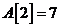

Основные элементы блок-схем
Массив – это именованная группа однотипных данных, хранящихся в последовательных ячейках памяти . Значения, которые образуют массив, называются элементами массива. Каждая ячейка содержит элемент массива. Элементы нумеруются по порядку, но необязательно начиная с единицы. Порядковый номер элемента массива называется индексом этого элемента.
Все элементы определенного массива имеют один и тот же тип. У разных массивов типы данных могут различаться. Например, один массив может состоять из чисел типа Integer, а другой – из чисел типа Real.
Например:
|
Индекс(i) |
1 |
2 |
3 |
4 |
5 |
|
Значение( ) |
-56 |
7 |
0 |
23 |
8 |
 ;
Если , то .
Массив, хранящий линейную таблицу, называется одномерным массивом. Тип элементов массива называется его базовым типом.
Способы описания одномерных массивов
Массив можно описать разными способами:
1. В разделе описания переменных
Var <имя массива>: Array [<тип индекса>] of <тип элементов>;
Тип индекса – порядковый тип кроме Integer. Часто используют интервальный тип (указывают допустимый диапазон значений). При указании диапазона начальный индекс не должен превышать конечный. Если индекс массива может приобретать все допустимые значения определенного перечислимого типа, то при описании массива возможно задание имени типа вместо границ изменения индекса. При этом границами индекса будут первое и последнее значения в описании типа индекса. Границы изменения индексов могут задаваться с помощью ранее объявленных констант. Тип элементов массива может быть любым. Число элементов массива фиксируется при описании и в процессе выполнения программы не меняется.
2. В разделе описания типов
Type <имя типа> = Array [<тип индекса>] of <тип элементов>;
Var <имя массива>: <имя типа>;
3. В разделе констант (задание типизированной константы)
Const <имя массива>: Array [<тип индекса>] of <тип элементов> = (<список элементов>);
Пример. Способы описания массивов.
Const NMax=50; Var A: Array [1..NMax] of Byte Type TArray=Array[1..100] of integer; Var A:TArray;
Способы задания одномерных массивов
1. Задание значений элементов с клавиатуры;
2. Задание с помощью генератора случайных чисел;
3. Чтение из файла;
4. Заполнение массива, элементы которого связаны некоторой закономерностью.
Ввод, вывод элементов одномерного массива
Заполнение и вывод массива можно выполнять только поэлементно с использованием циклов: сначала присвоить значение первому элементу, затем второму и т. д.; аналогично происходит вывод на экран – сначала вывод первого элемента, затем второго и т. д.
Пример ввода массива:
For i:=1 to 50 do Begin Write(a[', i , ']='); Readln(a[i]); End
В этом случае ввод будет осуществляться с подсказкой о номере элемента, который необходимо ввести пользователю.
Вывод массивов также осуществляется с помощью циклического оператора.
Пример вывода массива:
For i:=1 to 50 do Writeln('a[',i,']=', a[i]);
Пример. Написать программу заполнения одномерного массива с помощью генератора случайных чисел. Вывести значения на экран.
Program MAS1; Type Mas = Array [1..50] of Integer; Var A: Mas; i,n: Integer; Begin {Заполнение массива с помощью датчика случайных чисел} Write ('Введите количество элементов массива: '); Readln (n); Randomize; For i:=1 to n do A[i]:= -32768+random(65535); {Вывод на экран элементов массива} For i:=1 to n do Write ('A[',i,']= ',A[i],' '); End
Действия над массивами
Действия над массивом, как единым целым допустимы лишь в 2-х случаях:
- присваивание значений одного массива другому;
- операции отношения «равно», «не равно».
В обоих случаях массивы должны иметь одинаковые типы индексов и элементов.
Пример: Var P, Q: array[1..100] of real;
При выполнении операции присваивания P:=Q, все элементы массива Р станут равны соответствующим элементам массива Q.
Аналогично производится и сравнение массивов. Результатом сравнения массивов будет «истина» в том случае, если все элементы массива P равняются элементам массива Q.
Если нужно поменять местами значение двух каких-либо строк массива, то это делается через третью переменную того же типа:
D:=P[3]; P[3]:=P[7]; P[7]:=D;
Инструкция